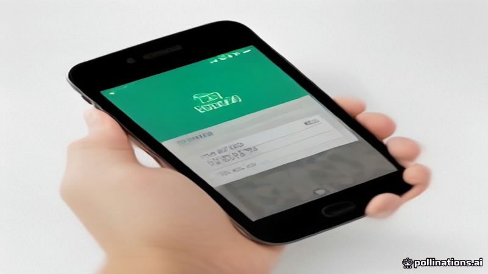

বাংলা কিউআর কোড ডিজিটাল পেমেন্ট সিস্টেম চালু
Prothom Alo · 2026-11-03
AI-generated illustration১ জুলাই থেকে সর্বজনীন বাংলা কিউআর কোড পেমেন্ট পদ্ধতি চালু, প্রথম আলো অনুযায়ী।
১ জুলাই থেকে বাংলা কিউআর কোড নামে একটি নতুন ডিজিটাল পেমেন্ট পদ্ধতি চালু হয়েছে, যা দেশের সর্বত্র ইলেকট্রনিক লেনদেনের জন্য একটি সমন্বিত ব্যবস্থা তৈরি করে।
প্রথম আলো অনুসারে, এই উদ্যোগটি একটি সর্বজনীন কিউআর‑কোড ভিত্তিক পেমেন্ট সমাধান হিসেবে নগদহীন লেনদেনকে সহজ করার লক্ষ্য রাখে।
Facts reported by: Prothom Alo
Read the original reporting at the links above.
Written by AI from facts reported by the outlets named above. It may contain errors; check the original reporting.Read the original reporting at the links above.
English version
Bangla QR Code Digital Payment System Launched Nationwide
A new digital payment method called Bangla QR code was launched on July 1, creating a nationwide system for electronic transactions.
The initiative, described by Prothom Alo as a universal QR‑code based payment solution, aims to simplify cashless payments across the country.